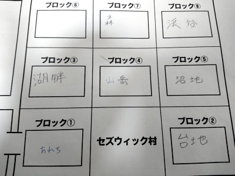

2019年2月8日金曜日。
我々は久々のセッションを開始した。
都合上オンラインでのプレイ。果たしてどうなるか？
って、このリプレイメモ、放置したまま完全に忘れてたんですよねーあああああああ
次回セッションが近いのでぱぱっと書いていきますよ！ぱぱっと書ければいいね！
今回は新米騎士の育成をすることにしました。2回目でございますね。
ゼノヴィアに会いに行きます。
GM「では新米騎士の修行の場所を決めてください」
ナナシ「ブルーローズの代理で振りまーす」
GM「振った数がでかいと遠くになりまーす」
ナナシ「5です」
GM「渓谷です。行き方は何パターンかあります」
「待って、地図がないからわからない」
「これどうすればいいんだ」
「どどんとふのメモに書くか、ラインに投げるか…」
ラインに投げてもらいました。

(注：都合上既に判明したエリアも含んだマップを表示しています)
GM「渓谷は右上ですね。行ったことのない右にいって上にいくチャレンジコースあるよ」
「新米騎士連れてそんなチャレンジコースいやです」
GM「今回の騎士は2人です」
みぞれ「2人？」
GM「いや3人だ」
ピーター「運命変転の使える人間だ！」
みぞれ「運命変転だいじ！」
GM「3回戦闘訓練すれば帰れます。帰りますって言えば帰れます、帰りのルートは気にしなくてよいです。ただしその3回は渓谷でしなければいけないのでほかのエリアで戦ってもノーカンです」
ブルーローズ「討伐ポイントは使えない？」
GM「使ったら訓練にならないので」
ブルーローズ「渓谷以外でも無理ですか」
GM「ダメです」
GM「報酬は一人当たり1800ガメルです。高くなってきました、平均レベル上がってきましたからね」
「騎士の名前決めよう」
「グリーン、パープル、ブラウンで」
「色足りなくなる」
ピーター「多分ホワイトとブラックを出すのはまだ早いって思ったんじゃないかな」
ナナシ「その通りだよ」
ピーター「えー？？？」
グリーンをタッシュが、ブラウンをピーターが、パープルをナナシが操作することになりました。
GM「新米騎士のごはんは考えなくてよいです。勝手に食べます。各自のごはんは申告してください。人間誰しも失敗はあります、僕は宇宙服を着ずに宇宙空間へ飛び出したことがあります」
タッシュ「何の話だ」
脱線しつつも出発。北は山岳ルートでまいります。

GM「ではブルーローズを最初にしてイベント表を振っていきます。ブルーローズ、主の位置をお願いします」
ブルーローズ「今手が離せないので全責任をナナシに委任します」
ナナシ「ころころ…6です」
GM 「ではイベントをお願いします」
ナナシ「こっちも6」
ブルーローズ「いきなり戦闘じゃないですか」
GM「じゃモンスターのカテゴリ決めてください」
ナナシ「6…なんだこれ、これだからどどんとふは！」
ナナシくんに厳しいどどんとふ。
GM「敵は…と。お、少ないぞ？人間型が2、雄牛が1」
ピーター「魔物知識判定します。人間16」
GM「知名度8なので誰でも知ってますね、腕利きの傭兵。人間なんで弱点はないです」
ピーター「牛20」
GM「ナンディンです、弱点抜いてます」
ナナシ「ふーむ、斬撃プラス…わぁ…おにくって感じだね」
ブルーローズ「傭兵と仲良しなんですか？言葉のわかるおにくなんだ。ちょっとあなたたち遺跡ビジネスに興味はありませんか？」
GM「牛が喋ります」
ナナシ「食べないでほしいモー」
牛(GM)「ここは私の縄張り、大人しくここから立ち去るがよい、立ち去らねばこいつらのように家畜にしてやろう」
「家畜？傭兵のがレベル高いよ？」
「傭兵だから雇われてるのかも」
ブルーローズ「わたしたちよくここを通りますけどお初にお目にかかりますわね」
GM「マップ広いからね」
牛(GM)「大人しく引き返すがよい セズウィック村とかいうところから来たのだろう」
ブルーローズ「詳しいですわね」
牛(GM)「このあたりのことを知らねば生き残れないからな」
ブルーローズ「それだけ頭のきれるあなただったらわたしたちを相手にするよりももっとおいしい話があることに気づいているのではなくて？」
牛(GM)「ほう、金品でもさし出そうというのか」
ブルーローズ「もっと価値のあるものですわ、人間を2人も従えるのであれば遺跡のボスになれるのでは？手付かずの遺跡があるのだけど」
みぞれ「これただ立ち去ればいいんじゃないかって思えてきた」
GM「ではバードかセージで2d6振ってください」
→失敗
ナナシ「はーい先制判定しまーす、勝ちましたー」
ピーター「とりあえずスネア三倍がけで。18」
GM「全員転びました」
ピーター「全ての行使判定に-2でーす。あといつものようにブルーローズにヴォーパルウェポン」
「ところでタッシュ先生MP96ってなんの冗談ですか」
タッシュ「96ですよー、言いたいことはわかるけどこれが真実です」
タッシュ「待て待てパープルが前に出てる誰操作したの」
ナナシ「俺」
ブルーローズ「なに前に出てるの！？」
タッシュ「あんどぅあんどぅ」
GM「ころころ」
「え、これ何の判定？」
GM「新米騎士が言うことを聞くかどうか」
ブルーローズ「は？？？」
GM「個性を出していきます。パープルは前に出ました、傭兵を攻撃します。命中振ってください」
ナナシ「11」
GM「転倒してるからマイナス2で…14、回避」
パープル(ナナシ)「この攻撃は当たるはずなのに！」
GM「パープルが青ざめたところで次どうぞ」
「ここはグリーンとブラウンで特攻攻撃をしかけるのはどうだろう」
ブルーローズ「あなたたちは！勇気と無謀は違うのよ！」
「でも転倒してるからワンチャン」
ブルーローズ「ワンチャンとかに命をかけないの！」
GM「どうする？タッシュ前進？」
タッシュ「いや待って待って。ブルーローズさんとりあえず殴ってみては？」
ブルーローズ「私が見本を見せれば言うことを聞くかもしれない？パープルがきりそこねたやつに接敵します」
ナナシ「異貌化は」
ブルーローズ「するよ」
ナナシ「するの？」
ブルーローズ「判定が入るってことですよね？異貌化します」
タッシュ「いや、今の答おかしくない？」
ブルーローズ「ナイトメアの地位向上を目指しているので隠しません。誰かが止めるならやめるけど」
タッシュ「止めません」
GM「異貌化することでリスクがありますよ。騎士団は貴族なのでやってらんねーって逃げられてしまう可能性があります」
ブルーローズ「やりたいなー」
「いいんじゃない？」
ブルーローズ「じゃ魔力撃キャッツアイマッスルベアーでトンファーで殴ります。命中18」
ナナシ「これ死んだんちゃう」
GM「回避失敗しました。ではパープルは異貌化した君をみて引きつった顔をするわけですね」
ナナシ「どすこいトンファー」
ブルーローズ「ダメージ26、防護引いて21。もう一発！ころころ」
「あっ」
「あっ」
「クリティカル」
「回った！」
「回ってないこれ命中判定」
ナナシ「どすこいトンファー」
GM「はーい回避失敗」
ブルーローズ「24点です。今新人ドン引き中ですよね、命中クリティカルって髪の毛つかんでトンファー殴りみたいな」
「タッシュ先生魔法撃ちます？」
タッシュ「どうしようかな、前に行かれちゃったから予定狂っちゃって」
みぞれ「あとでパープル説教だな」
タッシュ「みぞれさん一発かましたって」
みぞれ「じゃソリバレのみで傷ついたやつに攻撃。ころころ…低っ、14」
GM「当たりました」
みぞれ「ダメージは9…う、削りきれない、残り3点。こんなことだろうと思った」
タッシュ「じゃ私、前に出る、死にかけの1体を殴る」
GM「当たりました」
タッシュ「ダメージは10、防護点引いてー」
GM「しにましたー」
ナナシ「えーこれ倒さなきゃいけないかなー後ろ行ったらダメだよね」
タッシュ「後ろ行けるね」
ナナシ「まあいいや、傭兵を挑発攻撃」
GM「スネアいてーな、回避失敗」
ナナシ「ダメージ12点」
ブルーローズ「これ後ろのナンディンにに接敵しないと新人殴りにくるわけですね」
「いいんじゃないの」
ブルーローズ「ええ…」
「痛い目見とけよ新人」
ブルーローズ「そうね、生命力判定も経験かな」
GM「グリーンとブラウンはどうする？」
ピーター「そのままチアで、そこで震えててください」
GM「では腕利きの傭兵はナナシを殴…あ、補助行動で転倒を解除か」
ピーター「ちっ」
GM「2ペナはつくから6のままかー厳しいなー、しゃーないな、ほい13」
ナナシ「回避しまーすころころ、17、ほいきた4差、ブレードスカートで10点ダメージどうぞ」
GM「ナンディンの番だけど、選択肢がそんなにないんだよねー。前の乱戦に味方ごと巻き込んで後ろに飛ばすか」
みぞれ「らいとにんぐ？」
GM「らいとにんぐ」
タッシュ「起点はどちらさん？」
GM「ブルーローズ起点だろうな、あの恐ろしいダメージを見て『こいつはやばい』」
ブルーローズ「新人に起点がいかなかったので満足です」
GM「さすが先輩、ではぱいせんに向かってライトニング」
ブルーローズ「抵抗」
GM「ほかの皆さん、巻き込まれたかどうかの判定をお願いします。1d6を振って1、3で命中です。避けられなかった方は13を目標に抵抗判定」
誰が失敗したか忘れたけど失敗した人は全員抵抗しました。
GM「ダメージ11点、半減5点です」
ピーター「ちなみにナンディン転倒回復宣言してないので転倒したままです(にやり)」
GM「あっ忘れてた」
ブルーローズ「こっちの番！いつものやつで傭兵を攻撃！24点、追撃も24点！残り2点！」
タッシュ「同じのに攻撃します。9点ダメージ」
GM「はい倒れました」
残り1体！
ナナシ「前に出てウィップでナンディンの首締めます。挑発攻撃」
GM「2減らして…回避無理でーす」
ナナシ「クリった、17点、えーと2引いて」
GM「引かなくていいんじゃないの」
ナナシ「あっそうだった。はいキュっと。皆さんもうチアでいいよー」
ピーター「首しめてるから詠唱使えないね」
GM「角で攻撃するね。あっ補助で立ち上がります。で、挑発攻撃をくらった場合って自分をパワーアップさせる能力使えるのかな？」
ピーター「副行動としてやるならいいんじゃないですか？」
GM「いや次の行動に向けてバフかける場合」
タッシュ「それは攻撃をしなきゃいけないんじゃないかな」
ナナシ「とりあえず避けたし処すよ」
GM「しにそう」
ナナシ「窒息ダメージ1d6入ります。ころころ…1」
ナナシ「こっちのターンだよね、泣きのサーベルで攻撃」
GM「回避できません」
ナナシ「13点！しゅーりょー！」
GM「ここまででこんな時間か。今日は戦利品だけ回収してもらって終わろう。フリーアクションは次回で」
さすがオンセ、冒険に出発してからまだ一歩も動けてないぜ！
そして戦闘しかしていないおかげで半年近く前のメモからでもリプレイ起こせたのは僥倖でした。
次回、2019/7/14(日)セッション予定！
しかしGMの予定が怪しい…どうなるエターナル！？